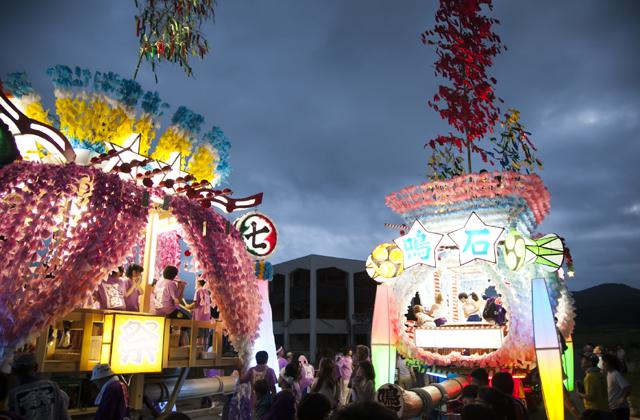

うごく七夕まつり

思い思いに飾り付けした山車が、威勢のいいお囃子に合わせて勇壮に町を練り
歩きます。日が落ちるとともに山車の飾りも変わって灯が燈り、幻想的な山車
がそれぞれに華やかさを競い合います。山車を引っ張る役には飛び入り参加も
可能なので、参加者として思い出を作ることもできます。
是非、高田市ならではの七夕を1度ご覧になってみてはいかがでしょうか。
観光情報
ジャンル
行事
所在地
陸前高田市高田町大町、荒町
電話番号
0192-54-5011
営業日
毎年8月7日
[アクセス経路]
東北自動車道 浦和IC→盛岡IC 6時間30分
八戸自動車道 八戸IC→盛岡IC 1時間30分
秋田自動車道 秋田IC→北上江釣子IC 1時間30分